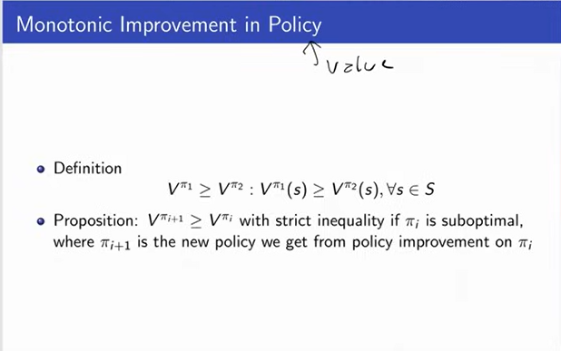

REINFORCEMENT LEARNING
Last updated on: May 25, 2024
Definition of reinforcement learning
-
Concerned with the foundational issue of
learning to make good (optimality in context) sequences of decisions.
-
Intelligent systems need to make decision. Learning
agents are required to perform actions based on the
environment.
-
An example of this is playing video game based on
pixel inputs, take nececcary actions to get reward.
-
Application in robotics- optimize
Key aspects of reinforcement learning
- Optimization
-
Goal to find an optimal way to make decisions
-
Yielding best outcomes
-
Or at least a very good strategy
- Delayed consequences
-
Decisions now can impact things much later (results not known)
such as saving for retirement or finding a key
in Montezuma's revenge
-
Introduces two challenges:
-
When planning: decisions involve reasoning about not
just immediate benefit but also its longer term ramifications
-
When learning: temporal credit assignment is hard (what caused
later high or low rewards?)
- Exploration
How do we explore?
-
Learning about the world by making decisions
-
Agent as scientist
-
Learn to ride a bike by tyring (and failing)
-
Finding a key in Montezuma's revenge- Traveler's
diarrhea (dysentery, Montezuma's revenge) is
usually a self-limiting episode of diarrhea that
results from eating food or water that is contaminated
with bacteria or viruses. Traveler's diarrhea is most
common in developing countries that lack resources to
ensure proper waste disposal and water treatment.
-
A challange here is Censored data
-
Only get a reward (label) for decision made
-
Don't know what would have happened if we had taken
red pill instead of blue pill.
-
Decision impact what we learn about- If we choose college
A or B, we will have different later experiences.
- Generalization
What is decision policies? Mapping from experiences to decision
and why this need to be learned?
-
Policy is mapping from past experience to action.
-
Why not just pre-program a policy? - Why not write everythin as
a program as a series of IF-THEN-ELSE statement?
Answer- As it will be absolutely enormous and not tractable.
AI Planning (vs RL)
It involves the highlighted (in bold and underlined)
- Optimization
- Generalization
- Exploration
- Delayed consequences
- Computes good sequence of decisions
- But given a model of how decisions impact world
Supervised Machine Learning (vs RL)
- Optimization
- Generalization
- Exploration
- Delayed consequences
- Learn from experience
- But provided correct labels
Unsupervised Machine Learning (vs RL)
- Optimization
- Generalization
- Exploration
- Delayed consequences
- Learn from experience
- But no labels from world
Imitation Learning
Imitation Learning, also known as Learning from
Demonstration (LfD), is a method of machine learning
where the learning agent aims to mimic human behavior.
In traditional machine learning approaches, an agent
learns from trial and error within an environment,
guided by a reward function. However, in imitation
learning, the agent learns from a dataset of demonstrations
by an expert, typically a human. The goal is to replicate
the expert's behavior in similar, if not the same, situations.
Imitation learning represents a powerful paradigm in machine
learning, enabling agents to learn complex behaviors without the
need for explicit reward functions. Its application spans numerous
domains, offering the potential to automate tasks that have traditionally
required human intuition and expertise. As research in this field
continues to advance, we can expect imitation learning to play an
increasingly significant role in the development of intelligent systems.
Features of Imitation learning:
- Reduces RL to supervised learning
-
Benefits
- Great tools for supervised learning
- Avoids exploration problem
- With big data lots of data about outcomes of decisions
-
Limitations
- Can be expensive to capture
- Limited by data collected
- Imitation learning + RL promising!
Imitation Learning vs RL
- Optimization
- Generalization
- Exploration
- Delayed consequences
- Learn from experience...of others
- Assumes input demos of good policies
How to proceed with RL?
- Explore the world
- Use experience to guide future decisions
Issues with RL
-
Where do rewards come from? And what happens if we get it wrong?
-
Robustness / Risk sensitivity
-
Multi-agent RL
Sequential Decision Making Under Uncertainity

|
-
Goal: Select actions to minimize total expected
future reward.
-
May require balancing immediate & long term rewards
-
May require strategic behaviour to achieve high rewards.
-
The world can also be an agent.
-
Example: Web advertisement, Robot unloading dishwasher,
blood pressure control
|

|

|
|
|

|
Markov Assumption
-
It says that the state used by an agent
is a sufficient statistic of history.
-
In order to predict the future, you only
need the current state of the environment.
-
Future is independent of the past given present.
Types of Sequential Decision Making Process
RL Algorithm Components
Often include one or more of
-
Model: Representation of how the world changes
in response to agent's action.
-
Agent's representation of how the world changes
in response to agent's action
-
Transition / dynamics model predicts next agent
state
-
Reward model predicts immediate reward
|
|
-
Lets say, rotor control is very bad and there is 50%
probability the the rover moves and 50% that it does
not move.
-
0 reward everywhere.
-
Model can be wrong. As the actual reward is 1 in state s1 and 10 in state s7
|
-
Policy: Function mapping agent's states to actions
-
Policy or decision policy is simply how we make
decisions.
-
Mapping from states to actions.
-
Deterministic policy means there is only one action.
-
Stochastic policy means you can have a distribution
over actions you might take.
-
Value function: Future rewards from being in a
state and/or action when following a particular policy.
-
Value function is expected discounted sum of future
rewards under a particular policy.
-
Its a weighting which says how much reward do I get
now and in the future. Weighted by how much I care about
immediate vs long term rewards.
-
The Discount factor y (gamma) weighs immediate vs future
rewards. It is between 0 and 1.
-
Value function allows us to say how good or bad the
different states are.
-
Can be used to quantify goodness/badness of states and actions
-
And decide how to act by comparing policies.
Types of RL Agents
-
Model-based
- Explicit: Model
- May or may not have policy and/or value function
-
Model-free
- Explicit: Value function and/or policy function
- No model
RL Agents

Key Challanges in Learning to Make Sequences of Good Decicions

Planning Example
Reinforcement Learning Example
Exploration and Exploitation
- Agent only experiences what happens for the actions it tries
-
Mars rover trying to drive left learns the reward and next state
for trying to drive left, but not for trying to drive right
- Obvious! But leads to a dilema - Things which are good based on the
prior experience and things which will be good in future.
- How should RL agent balance its actions?
-
Exploration: trying new things that might enable the agent to make
better decisions in the future.
-
Exploitation: choosing actions that are expected to yield good reward
given past experience.
- Often there may be an exploration-exploitation tradeoff
-
May have to sacrifice reward in order to explore & learn about potentially
better policy
Exploration and Exploitation Examples

Evaluation and Control
Evaluation: Estimate/predict the expected rewards from
following a given policy
Control: Optimization- find the best policy
Markov Process or Markov Chain
|
|
When we think of a Markov Process or Markov chain,
we don't think of a control yet. We don't think of
any action. There is no action. But the idea is there
will be a scochastic process that's evolving over time.
|
Return & Value Function
|
|
-
When we think about returns, we think about returns
and expected returns.
-
We define horizon as how long the agent is acting
for. How long this process is going on for and can be
infinite.
-
The definition of Return is the sum of rewards from
time step. The time can be infinite.
-
Value function is the expected return. If the process
is deterministic these two things will be identical. If
the process is stochastic, they will be different. That's
because in deterministic you always go to same next state.
Whereas, it will br different in stochastic process (in general).
|
Discount factor
|
|
-
Discount factor- Used for mathematic convenience.
-
We can be assured that the value function is bounded
as long as the reward function is bounded.
-
People empirically often act as there is a discount factor.
We weigh future rewards lowen than immediate rewards typically.
-
If you are only using discount factor for mathematical convenience,
if your horizon is always guaranteed to be finite, its fine to use y (gamma) = 1
|
Computing the Value of Markov Reward Process
|
|
-
The accuracy is given by 1 by square root of n.
Where n is the number of roll-outs (simulations).
-
It does not require the process to be markov process.
Its just a way to estimate sums of returns. Sums of rewards.
-
It can give you better estimates of process. Which means
computationally cheaper ways of estimating what the value
of a process.
|
|
|
This means the MRP values is the sum of Immediate reward plus the
discounted sum of future rewards.
|
|
|
The figure shows the equation to get V or V(s)
|

|
The computational complexity is lower than the previous method.
|
Markov Decision Process
|
|
MRP(Markov Reward Process) + action
MDP is a tuple which as state, action, reward, dynamics model and discount factor
|
MDP Policies
MDP Control
|
|
In general if there are |a| actions and |s|
states, how many deterministic policies are there?
--There are |a| ^ |s| (a to the power s) deterministic policies.
Is the optimal policy for a MDP always unique?
--NO
But there is always an optimal policy which gives maximum return.
|
Policy Search
|
|
If there is unlimited compute power, examine each and every
policy and then take the max (reward) of those.
But, thats not the case.
|
MDP Policy Iteration (PI)
|
|
In practice, we keep track of a guess of what the optimal policy might be. We
evaluate its value and then we try to improve it.
If we can't improve it anymore then we halt.
So, we start by initializing randomly. Here now
you can think of the subscript is indexing which
policy we're at. So, initially we start off with
some random policy and then Pi_i is always going to
index our current guess of what the optimal policy
might be. And while its not changing, we'll talk
about whether or not it can change or go back to the
same one in a second, we do value function policy. We
evaluate the policy using the same sorts of techniques
we just discussed because it's a fixed policy. Which
means we are now in a markov reward process. And then
we do policy improvement. So, the new thing we are doing
before now is policy improvement.
|
New Definition: State-Action Value Q
|
|
-
In order to define how we can improve a policy,
we are going to find something new which is the
state action value.
-
State values are denoted by V. Which is V_Pi(S)
(V Pi of s). Which says if we start in state s
and you follow policy pi, what is expected discounted
sum of rewards.
-
A state action value says, I will follow this policy pi
but not right away. I will take an action a, which might
be different than what my policy is telling me to do and
then later on the next time-step I'm going to follow policy
pi.
-
So, it just says I'm going to get my immediate reward from
taking this action a that I am chosing and then I'm going to
transition to a new state. Again. that depends on my current
state and the action I just took and from then on I am going
to take policy pi. So, that defines the Q function.
|
Policy Improvement
|
|
-
What policy improvement does is it takes into
consideration a policy, and gets value of it. So,
policy evaluation just allowed you to compute what
was the value of that policy. And now I want to see
if I can improve it.
-
Now, remember right now we are in the case where we know
the dynamics model and we know the reward model. So, we
proceed with Q computation where we compare the previous
value function by policy and now compute Q_pi which is obtained
by taking a different action. It could be the same and we do
this for all A and for all S. So, for all A and all S we compute
this and then we are going to compute the new policy and this is
the improvement step which maximizes this Q.
-
So, we do this computation and then we take the max.
-
Now, by definition this has to be greater than or equal to Q_pi(S, pi_(a))
-
Finding local maxima or global maxima? --Global
|
Delving Deeper Into Policy Improvement Step
|
|
-
First Q function, is calculated. Then new policy is evaluated.
For acceptance of new policy, the new value has to be greater
than the old value. When we do this, we compute Q function. First
we take an action and then we follow our old policy from then
onwards. And then I am picking whatever action is maximizing
that quantify for each state.
-
Okay. So, I am gonna do this process for each state. But, then
we are not going to follow the old policy from that point onwards,
we will follow the new policy for all the time. If the new is better.
|

|
-
The value is monotonic if the value of new policy is
greater than or equal to the old policy for all
states. So, it has to be either the same value or better.
-
With strict inequality if the old policy was suboptimal.
|
|
|
|
|
|
|
|
|
|
|
|
|
|
|
|
|
|
|
References:
Course content: https://www.youtube.com/playlist?list=PLoROMvodv4rOSOPzutgyCTapiGlY2Nd8u
Content- Stanford CS234: Reinforcement Learning | Winter 2019 | Lecture 1 - Introduction - Emma Brunskill - https://www.youtube.com/watch?v=FgzM3zpZ55o
Content- Stanford CS234: Reinforcement Learning | Winter 2019 | Lecture 2 - Given a Model of the World - https://www.youtube.com/watch?v=E3f2Camj0Is&t=1560s
Imitation learning: https://deepai.org/machine-learning-glossary-and-terms/imitation-learning
Menaing of Montezuma's revenge: https://healthcenter.indiana.edu/health-answers/travel/travelers-diarrhea.html